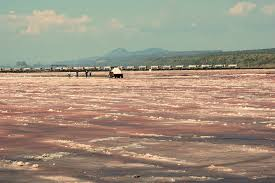

INTRODUCTION TO SALTS

1.(a) A salt is an ionic compound formed when the cation from a base combine
with the anion derived from an acid.
A salt is therefore formed when the hydrogen ions in an acid are replaced
wholly/fully or partially/partly ,directly or indirectly by a metal or ammonium
radical.
(b) The number of ionizable/replaceable hydrogen in an acid is called basicity
of an acid.
Some acids are therefore:
(i)monobasic acids generally denoted HX e.g.
HCl, HNO3,HCOOH,CH3COOH.
(ii)dibasic acids ; generally denoted H2X e.g.
H2SO4, H2SO3, H2CO3,HOOCOOH.
(iii)tribasic acids ; generally denoted H3X e.g.
H3PO4.
(c) Some salts are normal salts while other are acid salts.
(i)A normal salt is formed when all the ionizable /replaceable hydrogen in
an acid is replaced by a metal or metallic /ammonium radical.
(ii)An acid salt is formed when part/portion the ionizable /replaceable
hydrogen in an acid is replaced by a metal or metallic /ammonium radical.
(d) Some salts undergo hygroscopy, deliquescence and efflorescence.
(i) Hygroscopic salts /compounds are those that absorb water from the atmosphere
but do not form a solution.
Some salts which are hygroscopic include anhydrous copper(II)sulphate(VI),
anhydrous cobalt(II)chloride, potassium nitrate(V) common table salt.
(ii)Deliquescent salts /compounds are those that absorb water from the atmosphere
and form a solution.
Some salts which are deliquescent include: Sodium nitrate(V),Calcium chloride,
Sodium hydroxide, Iron(II)chloride, Magnesium chloride.
(iii)Efflorescent salts/compounds are those that lose their water of crystallization
to the atmosphere.
Some salts which effloresces include: sodium carbonate decahydrate,
Iron(II)sulphate(VI)heptahydrate, sodium sulphate (VI)decahydrate.
(e)Some salts contain water of crystallization.They are hydrated.Others do not
contain water of crystallization. They are anhydrous.
Name of hydrated salt and Chemical formula
Copper(II)sulphate(VI)pentahydrate CuSO4.5H2O
Aluminium(III)sulphate(VI)hexahydrate Al2 (SO4) 3.6H2O
Zinc(II)sulphate(VI)heptahydrate ZnSO4.7H2O
Iron(II)sulphate(VI)heptahydrate FeSO4.7H2O
Calcium(II)sulphate(VI)heptahydrate CaSO4.7H2O
Magnesium(II)sulphate(VI)heptahydrate MgSO4.7H2O
Sodium sulphate(VI)decahydrate Na2SO4.10H2O
Sodium carbonate(IV)decahydrate Na2CO3.10H2O
Potassium carbonate(IV)decahydrate K2CO3.10H2O
Potassium sulphate(VI)decahydrate K2SO4.10H2O
(f)Some salts exist as a simple salt while some as complex salts. Below are some
complex salts.
Tetraamminecopper(II)sulphate
Tetraamminezinc(II)nitrate(V)
Tetraamminecopper(II) nitrate(V)
(g)Some salts exist as two salts in one. They are called double salts.
Trona(sodium sesquicarbonate)
Ammonium iron(II)sulphate(VI)
Ammonium aluminium(III)sulphate(VI)
(h)Some salts dissolve in water to form a solution. They are said to be soluble.
Others do not dissolve in water. They form a suspension/precipitate in water.
13 Salts can be prepared in a school laboratory by a method that uses its solubility
in water.
(a) Soluble salts may be prepared by using any of the following methods:
(i)Direct displacement/reaction of a metal with an acid.
By reacting a metal higher in the reactivity series than hydrogen with a dilute
acid,a salt is formed and hydrogen gas is evolved.
Excess of the metal must be used to ensure all the acid has reacted.
When effervescence/bubbling /fizzing has stopped ,excess metal is filtered.
The filtrate is heated to concentrate then allowed to crystallize.
Washing with distilled water then drying between filter papers produces a sample
crystal of the salt. i.e.
M(s) + H2X -> MX(aq) + H2(g)
(ii)Reaction of an insoluble base with an acid
By adding an insoluble base (oxide/hydroxide )to a dilute acid until no more
dissolves, in the acid,a salt and water are formed. Excess of the base is filtered off.
The filtrate is heated to concentrate ,allowed to crystallize then washed with
distilled water before drying between filter papers
(iv)neutralization/reaction of soluble base/alkali with dilute acid
By adding an acid to a burette into a known volume of an alkali with 2-3 drops of
an indicator, the colour of the indicator changes when the acid has completely
reacted with an alkali at the end point. The procedure is then repeated without the
indicator .The solution mixture is then heated to concentrate , allowed to crystallize
,washed with distilled water before drying with filter papers.
(iv)direct synthesis/combination.
When a metal burn in a gas jar containing a non metal , the two directly combine
to form a salt. e.g.
2Na(s) + Cl2(g) -> 2NaCl(s)
2K(s) + Cl2(g) -> 2KCl(s)
Mg(s) + Cl2(g) -> Mg Cl2 (s)
Ca(s) + Cl2(g) -> Ca Cl2 (s)
Some salts once formed undergo sublimation and hydrolysis. Care should be
taken to avoid water/moisture into the reaction flask during their preparation.Such
salts include aluminium(III)chloride(AlCl3) and iron (III)chloride(FeCl3)